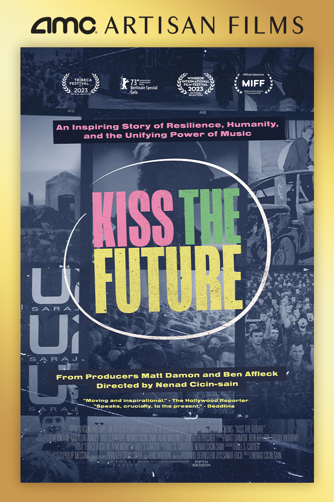

← Back
Kiss the Future
Director
Nenad Cicin-SainProduction Company
Pearl Street Films; Fifth Season; In Cahoots ProductionsNotable Talent
Logline
Add a one-sentence logline for this project.
Press
Gallery



Add a one-sentence logline for this project.
